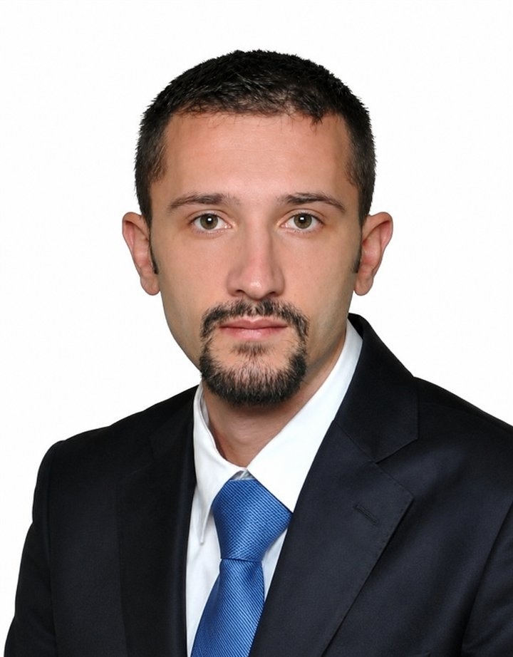

Custom software development
Purpose-built business applications that fit your real processes, so teams can work with fewer manual steps and systems that match the job.
Individual software development business · Pristina · Kosovo
I help businesses build, modernize and maintain dependable software through experienced C#/.NET engineering, thoughtful architecture and direct collaboration.
15+ years building and supporting business software C# / .NET specialist

01 / Services
Practical software development and technical guidance, shaped around your systems, constraints and business needs.
Purpose-built business applications that fit your real processes, so teams can work with fewer manual steps and systems that match the job.
Reliable services and REST APIs that connect applications, protect business rules and give your products a stable foundation.
Careful improvements to existing software: reduce friction, extend useful systems and make changes without losing important business knowledge.
Independent engineering input to clarify trade-offs, improve structure and help teams make decisions they can maintain.
02 / Technical expertise
Technologies and practices drawn from hands-on work across web, desktop and enterprise systems.
C# · .NET · .NET Core · .NET Framework · ASP.NET Core · ASP.NET MVC · WinForms
ASP.NET Core Web API · REST APIs · ASMX web services · system integrations
SQL · Microsoft SQL Server · MariaDB · Entity Framework · Entity Framework Core
Clean Architecture · Onion Architecture · Three-layer architecture · Repository · Unit of Work
Clean Code · NUnit · Agile · Scrum · Git · GitHub · GitLab
Microsoft Azure · Azure App Service · Azure DevOps · Docker · IIS
Selected from Fidan's professional CV. Specific tools are applied when they suit the system and its constraints.
03 / Selected experience
Representative engineering work from a career spanning financial, public-sector, telecommunications, education and commercial environments.
Designed and developed a government web and API application for managing metadata files, with XML exports for reporting through the EUROSTAT Metadata Handler.
C# · ASP.NET Core MVC · SQL Server · Clean Architecture
Built a web and API system supporting site, location, fault, path, asset and site-visit operations for a telecommunications business.
C# · ASP.NET Core MVC · Entity Framework Core · SQL Server
Contributed API endpoints and backend services for a university learning platform providing students with course materials and recordings.
C# · .NET 6 · ASP.NET Core Web API · MariaDB · NUnit
Developed financial reporting, SMS banking middleware and management information systems, including an ASP.NET MVC replacement for an existing Web Forms application.
C# · .NET · ASP.NET MVC · WinForms · SQL Server
Project descriptions are summarized from Fidan's CV. Some client and project details are intentionally generalized.
04 / About
I'm Fidan Abdiu, a software developer and the founder of SOFT DESIGN. I work directly with clients to build, improve and support the software their businesses rely on.
For more than 15 years, I have worked across web applications, APIs, desktop systems and enterprise software. My experience includes financial, governmental, telecommunications, educational and commercial environments.
I value clear communication, careful technical decisions and code that the next person can understand. Good engineering is not only getting a feature delivered; it is leaving a system easier to trust and maintain.
05 / Working approach
Good work starts with understanding the context. The process stays collaborative, visible and proportionate to the problem.
Clarify the need, the people involved and what success should look like.
Review existing systems, dependencies, risks and constraints before recommending change.
Agree a practical approach and architecture that fit the requirements and can be maintained.
Build in clear steps, communicate progress and validate behavior as the work takes shape.
Support a considered handover and continue improving the software as needs evolve.
A good project starts with a conversation
Tell me what you are working on, where you are stuck, or what needs to work better. I’ll get back to you directly.
Email Fidan